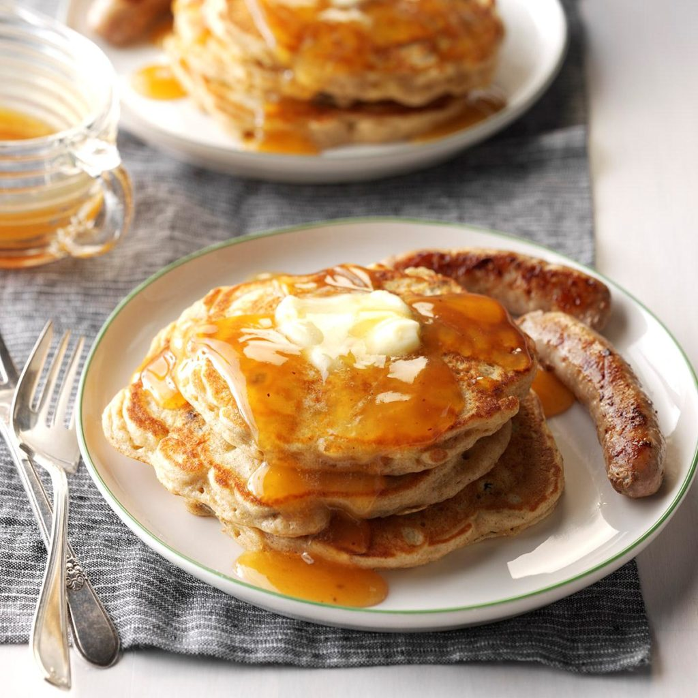

Apple Pancakes with Cider Syrup
Ingredients
1/2 cup all-purpose flour
1/4 cup whole wheat flour
2 teaspoons sugar
1/4 teaspoon baking soda
1/4 teaspoon salt
1/4 teaspoon ground cinnamon
2/3 cup finely chopped peeled apple
1/4 cup raisins
2/3 cup buttermilk
1 large egg, separated
2 teaspoons butter, melted
1/4 teaspoon vanilla extract
1/4 cup sugar
2 teaspoons cornstarch
2/3 cup apple cider or juice
1 cinnamon stick (1-1/2 inches)
Dash ground nutmeg
Additional butter, optional
Directions
- In a small bowl, combine the first six ingredients; stir in apple and raisins. Combine the buttermilk, egg yolk, butter and vanilla; stir into dry ingredients. In a small bowl, beat egg white until soft peaks form; fold into batter.
- Pour batter by heaping 1/4 cupfuls onto a hot griddle coated with cooking spray; turn when bubbles form on top. Cook until the second side is lightly browned.
- Meanwhile, in a small saucepan, combine the sugar, cornstarch and cider until smooth; add cinnamon stick. Bring to a boil over medium heat; cook and stir for 2 minutes or until thickened. Discard cinnamon stick. Stir nutmeg into syrup. Serve pancakes with warm syrup and, if desired, additional butter.
Nutrition Facts
3 pancakes with 1/3 cup syrup: 492 calories, 6g fat (3g saturated fat), 116mg cholesterol, 605mg sodium, 101g carbohydrate (58g sugars, 4g fiber), 12g protein.
Total Time
Prep/Total Time: 30 min.